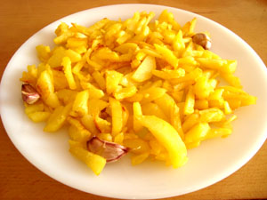

Receta de patatas fritas

Ingredientes
- 3 o 4 patatas grandes (300gr).
- 1 o 2 dientes de ajo.
- 500ml de aceite de oliva.
- Sal y pimienta al gusto.
Elaboracion
Las patatas fritas son uno de los acompañamientos más populares y deliciosos. Para prepararlas, primero pela las patatas y córtalas en tiras del grosor deseado. Luego, calienta el aceite en una sartén grande a fuego medio-alto. Cuando el aceite esté bien caliente, añade las patatas junto a los ajos en pequeñas tandas, friendolas hasta que estén doradas y crujientes. Finalmente, retíralas con una espumadera, escúrrelas sobre papel absorbente y espolvorea la sal y pimienta al gusto.